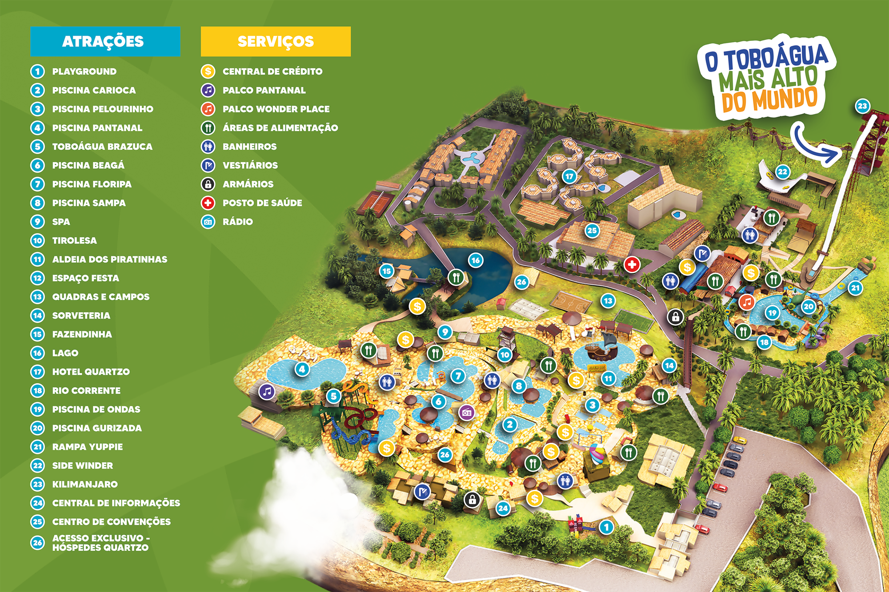

📸 Ponto Instagramável
Não consegui acessar a câmera. Verifique as permissões do navegador, ou use a opção "Escolher da galeria" abaixo.
Enquadre e toque em "Capturar", ou escolha uma foto da galeria:
Versão interativa do mapa do parque

Recomendado: use os 3 pontos com ⭐ no menu abaixo (Entrada/Bilheteria, Kilimanjaro e Tobogã Brazuca) — são extremidades bem afastadas do parque, o que deixa a calibração mais precisa. Eles precisam estar com a posição já calibrada no mapa antes (senão aparecem desabilitados).
Não consegui acessar a câmera. Verifique as permissões do navegador, ou use a opção "Escolher da galeria" abaixo.
Enquadre e toque em "Capturar", ou escolha uma foto da galeria: